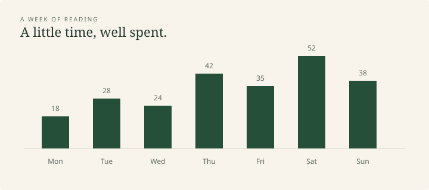

A little evidence
Figures, captions, and the information around them.
A figure in the text
A figure should belong to the page. This simple chart uses the theme’s palette and shows a small set of illustrative observations.

Context matters
These values are invented for this specimen. The caption gives the figure a name, and the surrounding text explains why it is here.
| Day | Minutes | A note |
|---|---|---|
| Monday | 18 | A short essay |
| Wednesday | 24 | Returning to a passage |
| Friday | 35 | Notes and a new chapter |
| Sunday | 38 | A quiet afternoon |
A figure’s place
Images scale with the reading column. Wide tables scroll inside their own frame on small screens.